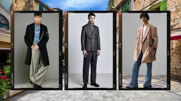

A men's collection typically includes a variety of clothing items, accessories, and grooming products designed for men. This can range from casual wear like t-shirts, jeans, and sneakers to formal wear like suits, dress shirts, and dress shoes. Accessories like watches, belts, wallets, and bags are also common, along with grooming products such as fragrances, skincare, and shaving essentials.
MENS CLOTHS :

CLOTHNG: Tops: T-shirts, shirts (casual and formal), polos, sweaters, hoodies, jackets (denim, leather, bomber, etc.), and suits/blazers. Bottoms: Jeans, trousers (chinos, dress pants), shorts, and athletic wear (shorts, joggers). Outerwear: Coats, jackets, and vests for different weather conditions. Underwear and Loungewear: Briefs, boxers, undershirts, pajamas, and robes. 
JEANS :

SHOES:


ACCESSORIES:
ALL BRANDS ARE AVAILABLE :
Bags: Backpacks, briefcases, messenger bags, duffel bags, and wallets. Hats and Caps: Baseball caps, beanies, and fedoras. Belts: Leather and fabric belts to match different styles. Watches: Dress watches, sports watches, and smartwatches. Jewelry: Rings, bracelets, necklaces, and cufflinks. Scarves and Gloves: For warmth and style. Socks: Dress socks, athletic socks, and casual socks.
ROLEX CONNECTION WATCH :

ORIGINAL LEATHER ACCESSORIES :

GROOMING: Fragrances: Perfumes and colognes. Skincare: Face wash, moisturizers, and serums. Haircare: Shampoo, conditioner, and styling products. Shaving: Razors, shaving cream, aftershave, and beard oils.
WHERE TO SHOP:
Many retailers offer men's collections, including:
Specialty Stores: Peter England,Selected hommie, Louis Philippe, Balmain, United Colors of Benetton. Department Stores: Shoppers Stop, Pantaloons, Marks & Spencer India. Online Marketplaces: Amazon.in, Max Fashion. Fast Fashion Brands: Style Union.
EXAMPLE SHOPS FOR PURCHASE THE THINGS :
Top 1
__next
next